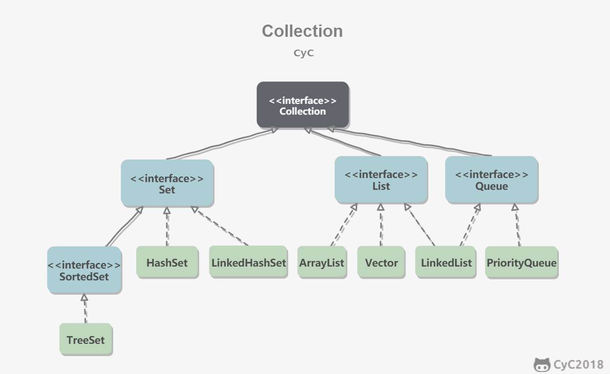
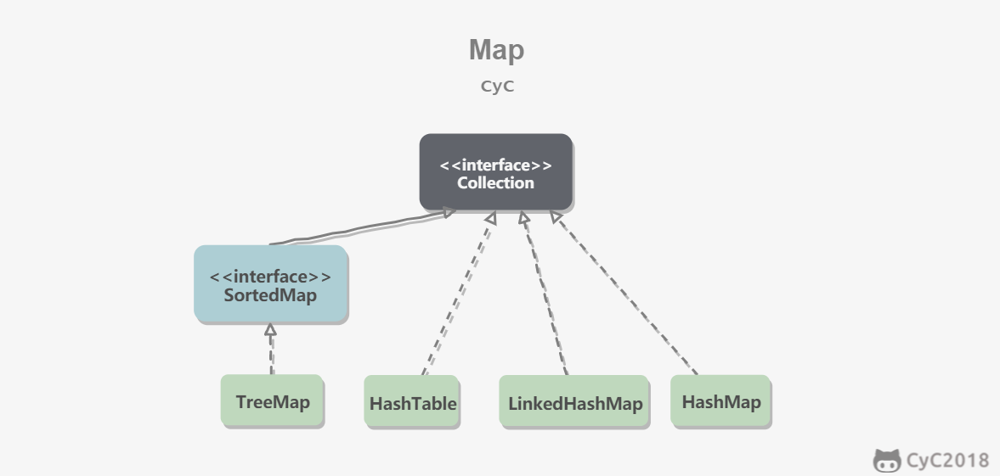
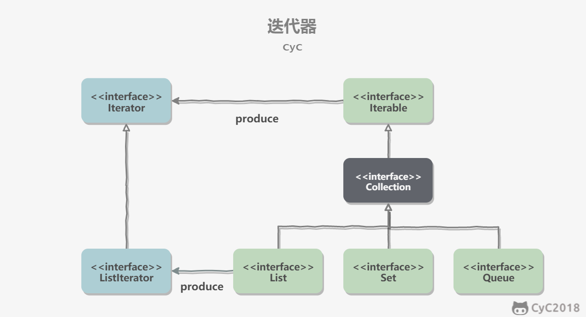
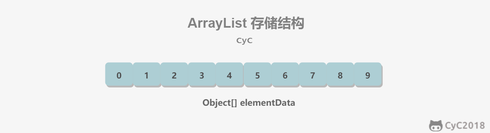
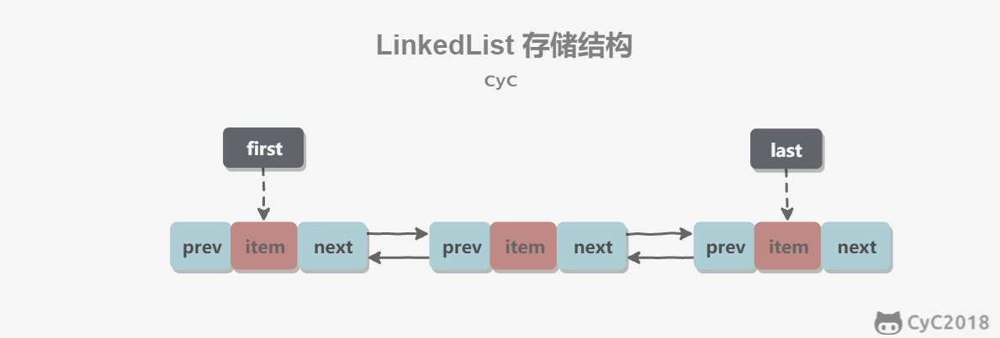
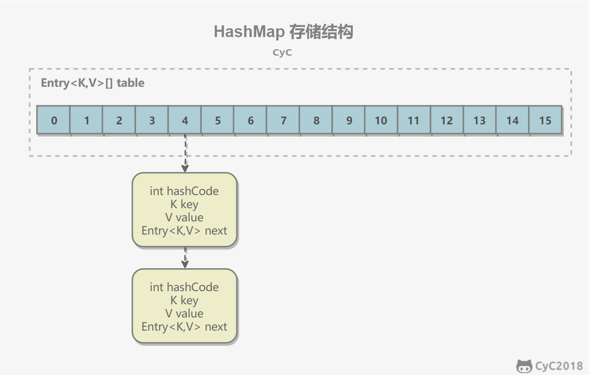
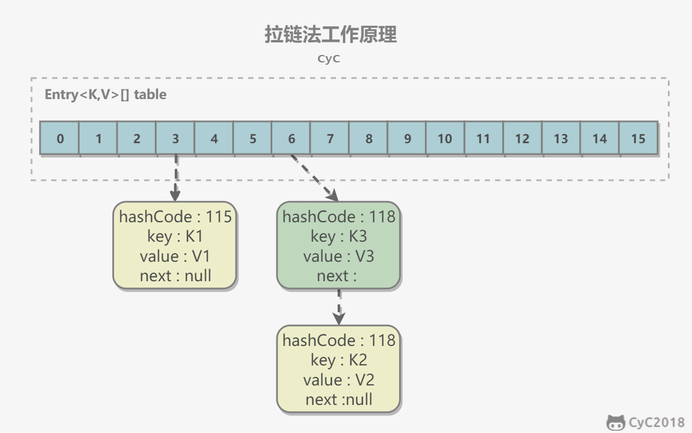

Java容器

文章目录
概览
Java容器主要包括Collection和Map两种，Collection存储对象集合，而Map存储键值对（两个对象）的映射表。
Collection

Set
- TreeSet：基于红黑树实现，支持有序性操作（通过其实现SortedSet接口也可看出）。但是查询效率不如HashSet，HashSet查找时间复杂度为O(1)，而TreeSet则为O(logN)。
- HashSet：基于哈希表实现，支出快速查找，但不支持有序性操作。并且失去了元素的插入顺序信息。
- LinkedHashSet：具有HashSet的查找效率，并且内部使用双向链表维护元素的插入顺序。
List
- ArrayList：基于动态数组实现，支持随机访问。
- Vector：和ArrayList类似，但是它是线程安全的。
- LinkedList：基于双向链表实现，只能顺序访问，但是可以快速的在链表中插入和删除。不仅如此，LinkedList还可以用作栈、队列和双向队列 。
Queue
- LinkedList：可以用它来实现双向队列。
- PriorityQueue：基于堆结构实现，可以用它来实现优先队列。
Map

- TreeMap：基于红黑树实现。
- HashMap：基于哈希表实现。
- HashTable：和HashMap类似，但是它是线程安全的， 这意味着同一时刻多个线程同时写入HashTable不会导致数据不一致 。但是它是遗留类，不应该去使用它，而是使用ConcurrentHashMap来支持线程安全，ConcurrentHashMap的效率会更高，因为ConcurrentHashMap引入和分段锁。
- LinkedHashMap：使用双向链表来维护元素的顺序，顺序为插入顺序或者最近最少使用顺序。
容器中的设计模式
迭代器模式

Collection继承了Iterable接口，其中的iterator()方法能够产生一个Iterator对象，通过这个对象就可迭代遍历Collection中的元素。
从JDK1.5之后就可以使用foreach方法来遍历实现了Iterable接口的聚合对象。例如：
1 2 3 4 5 6 |
ArrayList<String> list = new ArrayList<>();
list.add("笨笨");
list.add("蠢蠢");
for (String v:list){
System.out.println(v);
} |
适配器模式
java.util.Arrays.asList()可以把数组类型转换成List类型。需要注意的事，asList()参数为泛型的变长参数，不能使用基本类型数组作为参数，只能使用相应的包装类型数组。
asList()的实现代码如下：
1 2 3 4 5 |
@SafeVarargs
@SuppressWarnings("varargs")
public static <T> List<T> asList(T... a) {
return new ArrayList<>(a);
} |
调用asList()的两种方式如下：
1 2 3 4 5 |
//方式一
Integer[] args={1,2,3};
List<Integer> integers = Arrays.asList(args);
//方式二
List<String> strings = Arrays.asList("1", "2"); |
源码分析
没有特殊说明都是基于JDK 1.8的源码。
ArrayList
概览
因为ArrayList是基于数组实现的，所以支持快速随机访问。RandomAccess接口标识着该类支持快速随机访问。
1 2 |
public class ArrayList<E> extends AbstractList<E>
implements List<E>, RandomAccess, Cloneable, java.io.Serializable |
数组的默认大小为10.
1 2 3 4 |
/** * Default initial capacity. */ private static final int DEFAULT_CAPACITY = 10; |

扩容
添加元素时使用ensureCapacityInternal()方法来保证容量足够，如果不够，需要使用grow()方法来进行扩容，新容量的大小为旧容量的1.5倍（一般情况下）。
同时，扩容需要调用Arrays.copyOf()把原始数组整个复制到新数组中，这个操作代价很高， 因此最好在创建ArrayList对象时就指定大概容量的大小，减少扩容的次数 。
扩容部分源码如下：
1 2 3 4 5 6 7 8 9 10 11 12 13 14 15 16 17 18 19 20 21 22 23 24 25 26 27 28 29 30 31 32 33 34 35 36 37 38 39 |
public boolean add(E e) {
ensureCapacityInternal(size + 1); // Increments modCount!!
elementData[size++] = e;
return true;
}
private void ensureCapacityInternal(int minCapacity) {
if (elementData == DEFAULTCAPACITY_EMPTY_ELEMENTDATA) {
minCapacity = Math.max(DEFAULT_CAPACITY, minCapacity);
}
ensureExplicitCapacity(minCapacity);
}
private void ensureExplicitCapacity(int minCapacity) {
modCount++;
// overflow-conscious code
if (minCapacity - elementData.length > 0)
grow(minCapacity);
}
private void grow(int minCapacity) {
// overflow-conscious code
int oldCapacity = elementData.length;
int newCapacity = oldCapacity + (oldCapacity >> 1);
if (newCapacity - minCapacity < 0)
newCapacity = minCapacity;
if (newCapacity - MAX_ARRAY_SIZE > 0)
newCapacity = hugeCapacity(minCapacity);
// minCapacity is usually close to size, so this is a win:
elementData = Arrays.copyOf(elementData, newCapacity);
}
private static int hugeCapacity(int minCapacity) {
if (minCapacity < 0) // overflow
throw new OutOfMemoryError();
return (minCapacity > MAX_ARRAY_SIZE) ?
Integer.MAX_VALUE :
MAX_ARRAY_SIZE;
} |
删除
需要调用System.arraycopy()将index+1后面的元素都复制到index位置上，该操作的时间复杂度为O(n)，ArrayList删除元素的代价是非常高的。
1 2 3 4 5 6 7 8 9 10 |
public E remove(int index) {
rangeCheck(index);
modCount++;
E oldValue = elementData(index);
int numMoved = size - index - 1;
if (numMoved > 0)
System.arraycopy(elementData, index+1, elementData, index, numMoved);
elementData[--size] = null; // clear to let GC do its work
return oldValue;
} |
序列化
ArrayList基于数组实现，并且具有动态扩展的特性，因此保存元素的数组不一定都会被使用，那么就没必要全部进行序列化。
保存元素的数组elementData使用 transient 修饰， 该关键字声明数组默认不会被序列化 。
1
|
transient Object[] elementData; // non-private to simplify nested class access |
ArrayList实现了writeObject()和readObject()来控制只序列化数组中有元素填充的那部分的内容。
1 2 3 4 5 6 7 8 9 10 11 12 13 14 15 16 17 18 19 20 21 22 23 24 25 26 27 28 29 30 31 32 33 34 35 36 37 38 39 40 |
private void readObject(java.io.ObjectInputStream s)
throws java.io.IOException, ClassNotFoundException {
elementData = EMPTY_ELEMENTDATA;
// Read in size, and any hidden stuff
s.defaultReadObject();
// Read in capacity
s.readInt(); // ignored
if (size > 0) {
// be like clone(), allocate array based upon size not capacity
ensureCapacityInternal(size);
Object[] a = elementData;
// Read in all elements in the proper order.
for (int i=0; i<size; i++) {
a[i] = s.readObject();
}
}
}
private void writeObject(java.io.ObjectOutputStream s)
throws java.io.IOException{
// Write out element count, and any hidden stuff
int expectedModCount = modCount;
s.defaultWriteObject();
// Write out size as capacity for behavioural compatibility with clone()
s.writeInt(size);
// Write out all elements in the proper order.
for (int i=0; i<size; i++) {
s.writeObject(elementData[i]);
}
if (modCount != expectedModCount) {
throw new ConcurrentModificationException();
}
} |
序列化时需要使用ObjectOutputStream的writeObject()将对象装换为字节流并输出。而writeObject()方法在传入的对象存在writeObject()方法的时候会反射调用该对象的writeObject()来实现序列化。反序列化使用的是ObjectInputStream的readObject()方法，原理类似。
Fail-Fast
modCount用来记录ArrayList结构发生变化的次数。结构发生变化是指：添加或者删除至少一个元素的所有操作，或者是调整内部数组的大小，仅仅是设置元素的值不算结构发生了变化。
在进行序列化或者迭代等操作时，需要比较操作前后的modCount是否发生了变化 ，如果发生了变化，则需要抛出ConcurrentModicationException。例如上面的writeObject()方法。
Vector
同步
它的实现与ArrayList类型，但是使用了关键字 synchronize 进行同步。
1 2 3 4 5 6 7 8 9 10 11 12 13 |
public synchronized boolean add(E e) {
modCount++;
ensureCapacityHelper(elementCount + 1);
elementData[elementCount++] = e;
return true;
}
public synchronized E get(int index) {
if (index >= elementCount)
throw new ArrayIndexOutOfBoundsException(index);
return elementData(index);
} |
扩容
Vector的构造函数可以传入capacityIncreament参数，它的作用是在扩容时使容量capacity增长capacityIncreament。如果这个参数的值小于等于0，扩容时每次都令capacity为原来的 两倍 。
1 2 3 4 5 6 7 8 9 10 11 12 13 14 15 16 17 18 19 20 |
public Vector(int initialCapacity, int capacityIncrement) {
super();
if (initialCapacity < 0)
throw new IllegalArgumentException("Illegal Capacity: "+
initialCapacity);
this.elementData = new Object[initialCapacity];
this.capacityIncrement = capacityIncrement;
}
private void grow(int minCapacity) {
// overflow-conscious code
int oldCapacity = elementData.length;
int newCapacity = oldCapacity + ((capacityIncrement > 0) ?
capacityIncrement : oldCapacity);
if (newCapacity - minCapacity < 0)
newCapacity = minCapacity;
if (newCapacity - MAX_ARRAY_SIZE > 0)
newCapacity = hugeCapacity(minCapacity);
elementData = Arrays.copyOf(elementData, newCapacity);
} |
调用没有capacityIncreament的构造函数时，capacityIncreament值被设置为0，也就是说默认情况下Vector每次扩容时容量都会翻倍。
1 2 3 4 5 6 7 |
public Vector(int initialCapacity) {
this(initialCapacity, 0);
}
public Vector() {
this(10);
} |
与ArrayList的比较
- Vetor是同步的，因此开销比ArrayList大，访问速度要更加慢。最好使用ArrayList而不是Vector，因为同步操作完全可以由程序员自己来控制。
- Vector每次扩容（默认情况下）请求其大小的2倍（也可以通过构造函数设置增长的容量），而ArrayList是1.5倍。
替代方案
可以使用 Collections.synchronizedList(); 得到一个线程安全的ArrayList。
1 2 |
ArrayList<Integer> list = new ArrayList<>(); List<Integer> synList = Collections.synchronizedList(list); |
也可以使用concurrent并发包下的 CopyOnWriteArrayList 类。
1
|
List<String> list=new CopyOnWriteArrayList<>(); |
CopyOnWriteArrayList
读写分离
写操作在一个复制的数组上进行，读操作还是在原始数组中进行，读写分离，互不影响。
写操作需要加锁，防止并发写入时导致写入数据丢失。
写操作结束之后需要把原始数组指向新的复制数组。
1 2 3 4 5 6 7 8 9 10 11 12 13 14 15 16 17 18 19 20 21 22 23 24 25 26 27 28 29 30 31 32 |
public boolean add(E e) {
final ReentrantLock lock = this.lock;
lock.lock();
try {
Object[] elements = getArray();
int len = elements.length;
Object[] newElements = Arrays.copyOf(elements, len + 1);
newElements[len] = e;
setArray(newElements);
return true;
} finally {
lock.unlock();
}
}
final void setArray(Object[] a) {
array = a;
}
@SuppressWarnings("unchecked")
private E get(Object[] a, int index) {
return (E) a[index];
}
/**
* {@inheritDoc}
*
* @throws IndexOutOfBoundsException {@inheritDoc}
*/
public E get(int index) {
return get(getArray(), index);
} |
适用场景
CopyOnWriteArrayList在写操作的同时允许读操作，大大提高了读操作的性能，因此很适合读多写少的应用场景。但是CopyOnWriteArrayList有如下缺陷：
- 内容占用：在写操作时需要复制一个新的数组，使得内容占用为原来的两倍左右。
- 数据不一致：读操作不能读取实时性的数据，因为部分写操作的数据还未同步到读数组中。
所以CopyOnWriteArrayList不适合内容敏感以及对实时性要求很高的场景。
LinkedList
概览
基于双向链表实现，使用Node存储链表节点信息。
1 2 3 4 5 |
private static class Node<E> {
E item;
Node<E> next;
Node<E> prev;
} |
每个链表存储了first和last指针：
1 2 |
transient Node<E> first; transient Node<E> last; |

与ArrayList的比较
ArrayList基于动态数组实现，而LinkedList基于双线链表实现。ArrayList和LinkedList的区别可以归结为数组和链表的区别：
- 数组支持随机访问，但插入删除的代价很高，需要移动大量元素。
- 链表不支持随机访问，但插入删除只需要改变指针。
HashMap
以下源码分析以JDK 1.7为主。
存储结构
内部包含了一个Entry类型的数组table。Entry存储着键值对。它包含了四个字段，从next字段可以看出 Entry是一个链表 。即数组中的每个位置被当成一个桶，一个桶存放一个链表。HashMap使用 拉链法 来解决冲突，同一个链表中存放哈希值和散列桶取模运算结果相同的Entry。

1 2 3 4 5 6 7 8 9 10 11 12 13 14 15 16 17 18 19 20 21 22 23 24 25 26 27 28 29 30 31 32 33 34 35 36 37 38 39 40 41 42 43 44 45 46 47 48 49 50 51 52 |
transient Entry[] table;
static class Entry<K,V> implements Map.Entry<K,V> {
final K key;
V value;
Entry<K,V> next;
int hash;
Entry(int h, K k, V v, Entry<K,V> n) {
value = v;
next = n;
key = k;
hash = h;
}
public final K getKey() {
return key;
}
public final V getValue() {
return value;
}
public final V setValue(V newValue) {
V oldValue = value;
value = newValue;
return oldValue;
}
public final boolean equals(Object o) {
if (!(o instanceof Map.Entry))
return false;
Map.Entry e = (Map.Entry)o;
Object k1 = getKey();
Object k2 = e.getKey();
if (k1 == k2 || (k1 != null && k1.equals(k2))) {
Object v1 = getValue();
Object v2 = e.getValue();
if (v1 == v2 || (v1 != null && v1.equals(v2)))
return true;
}
return false;
}
public final int hashCode() {
return Objects.hashCode(getKey()) ^ Objects.hashCode(getValue());
}
public final String toString() {
return getKey() + "=" + getValue();
}
} |
拉链法的工作原理
举例如下：
1 2 3 4 |
HashMap<String, String> map = new HashMap<>();
map.put("K1", "V1");
map.put("K2", "V2");
map.put("K3", "V3"); |
- 新建一个HashMap，默认大小为16。
- 插入
- 插入
- 插入
Notice： 链表的插入是以头插法进行的，例如上面的
查找需要分两步：
- 计算键值对所在的桶。
- 在链表上顺序查找，时间复杂度显然和链表的长度成正比。

put操作
1 2 3 4 5 6 7 8 9 10 11 12 13 14 15 16 17 18 19 20 21 22 23 24 25 26 |
public V put(K key, V value) {
if (table == EMPTY_TABLE) {
inflateTable(threshold);
}
// 键为 null 单独处理
if (key == null)
return putForNullKey(value);
int hash = hash(key);
// 确定桶下标
int i = indexFor(hash, table.length);
// 先找出是否已经存在键为 key 的键值对，如果存在的话就更新这个键值对的值为 value
for (Entry<K,V> e = table[i]; e != null; e = e.next) {
Object k;
if (e.hash == hash && ((k = e.key) == key || key.equals(k))) {
V oldValue = e.value;
e.value = value;
e.recordAccess(this);
return oldValue;
}
}
modCount++;
// 插入新键值对
addEntry(hash, key, value, i);
return null;
} |
HashMap允许插入键为null的键值对。 但是因为无法调用null的hashCode()方法，也就无法确定该键值对的桶下标，只能通过强制指定一个桶下标来存放。HashMap使用第0个桶存放键为null的键值对。
1 2 3 4 5 6 7 8 9 10 11 12 13 |
private V putForNullKey(V value) {
for (Entry<K,V> e = table[0]; e != null; e = e.next) {
if (e.key == null) {
V oldValue = e.value;
e.value = value;
e.recordAccess(this);
return oldValue;
}
}
modCount++;
addEntry(0, null, value, 0);
return null;
} |
使用链表的头插法，也就是新的键值对插在链表的头部，而不是链表的尾部。
1 2 3 4 5 6 7 8 9 10 11 12 13 14 15 16 17 18 19 20 21 22 23 |
void addEntry(int hash, K key, V value, int bucketIndex) {
if ((size >= threshold) && (null != table[bucketIndex])) {
resize(2 * table.length);
hash = (null != key) ? hash(key) : 0;
bucketIndex = indexFor(hash, table.length);
}
createEntry(hash, key, value, bucketIndex);
}
void createEntry(int hash, K key, V value, int bucketIndex) {
Entry<K,V> e = table[bucketIndex];
// 头插法，链表头部指向新的键值对
table[bucketIndex] = new Entry<>(hash, key, value, e);
size++;
}
Entry(int h, K k, V v, Entry<K,V> n) {
value = v;
next = n;
key = k;
hash = h;
} |
确定桶下标
很多操作都要先确定一个键值对的所在桶的下标，分为如下两步：
1 2 |
int hash=hash(key); int i=indexFor(hash,table.length); |
计算hash值
1 2 3 4 5 6 7 8 9 10 11 12 13 14 15 16 17 18 |
final int hash(Object k) {
int h = hashSeed;
if (0 != h && k instanceof String) {
return sun.misc.Hashing.stringHash32((String) k);
}
h ^= k.hashCode();
// This function ensures that hashCodes that differ only by
// constant multiples at each bit position have a bounded
// number of collisions (approximately 8 at default load factor).
h ^= (h >>> 20) ^ (h >>> 12);
return h ^ (h >>> 7) ^ (h >>> 4);
}
public final int hashCode() {
return Objects.hashCode(key) ^ Objects.hashCode(value);
} |
取模
令x=1<<4，即x为2的4此方。令一个数y与x-1做与运算，可以去除y位级表示的第4位以上数：
1 2 3 |
y : 10110010 x-1 : 00001111 y&(x-1) : 00000010 |
这个性质和y对x取模效果是一样的：
1 2 3 |
y : 10110010 x : 00010000 y%x : 00000010 |
而位运算的代价比求模运算小得多，因此在进行这种计算用位运算能带来更高的性能。确定桶的下标的最后一步就是将key的hash值对桶个数取模：hash%capacity，如果能保证capacity为2的n次方，那么就可以将这个取模操作转换成与操作。
1 2 3 |
static int indexFor(int h, int length) {
return h & (length-1);
} |
扩容基本原理
设HashMap的table的长度为M，需要存储的键值对数量为N，如果哈希函数满足均匀性的要求，那么每条链表的长度大约为N/M，因此查找的复杂度为O(N/M)。为了让查找成本降低，应该是N/M尽可能小，因此需要保证M尽可能的大，也就是说table要尽可能大。HashMap采用动态扩容来根据当前的N值来调整M值，是的空间效率和时间效率得到保证。
和扩容有关的参数主要有：capacity、size、threshold和load_factor：
| 参数 | 含义 |
|---|---|
| capacity | table的容量大小，默认为16。需要注意的是： capacity必须为2的n次方 |
| size | 键值对的数量 |
| threshold | size的阈值，当size大于等于threshold就必须进行扩容 |
| loadFactor | 装载因子，table能够使用的比例，threshold=(int)(capacity*loadFactor) |
相关源码如下：
1 2 3 4 5 6 7 8 9 10 11 12 13 14 15 |
static final int DEFAULT_INITIAL_CAPACITY = 16; static final int MAXIMUM_CAPACITY = 1 << 30; static final float DEFAULT_LOAD_FACTOR = 0.75f; transient Entry[] table; transient int size; int threshold; final float loadFactor; transient int modCount; |
从下面的代码可看出，当需要扩容时，令capacity为原来的两倍：
1 2 3 4 5 6 |
void addEntry(int hash, K key, V value, int bucketIndex) {
Entry<K,V> e = table[bucketIndex];
table[bucketIndex] = new Entry<>(hash, key, value, e);
if (size++ >= threshold)
resize(2 * table.length);
} |
扩容使用resize()实现，需要注意的是扩容同样需要把oldTable的所有键值对重新插入到newTable中，因此这一步是很费时的。
1 2 3 4 5 6 7 8 9 10 11 12 13 14 15 16 17 18 19 20 21 22 23 24 25 26 27 28 29 30 |
void resize(int newCapacity) {
Entry[] oldTable = table;
int oldCapacity = oldTable.length;
if (oldCapacity == MAXIMUM_CAPACITY) {
threshold = Integer.MAX_VALUE;
return;
}
Entry[] newTable = new Entry[newCapacity];
transfer(newTable);
table = newTable;
threshold = (int)(newCapacity * loadFactor);
}
void transfer(Entry[] newTable) {
Entry[] src = table;
int newCapacity = newTable.length;
for (int j = 0; j < src.length; j++) {
Entry<K,V> e = src[j];
if (e != null) {
src[j] = null;
do {
Entry<K,V> next = e.next;
int i = indexFor(e.hash, newCapacity);
e.next = newTable[i];
newTable[i] = e;
e = next;
} while (e != null);
}
}
} |
文章作者 Pinger
上次更新 2020-05-12